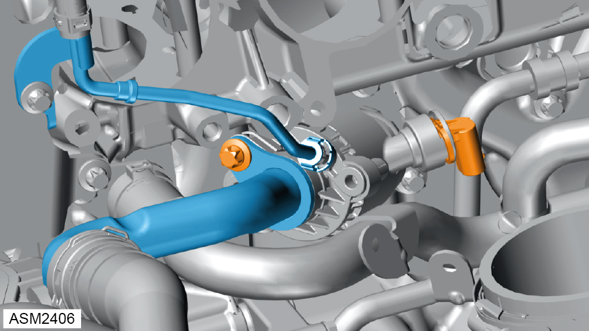
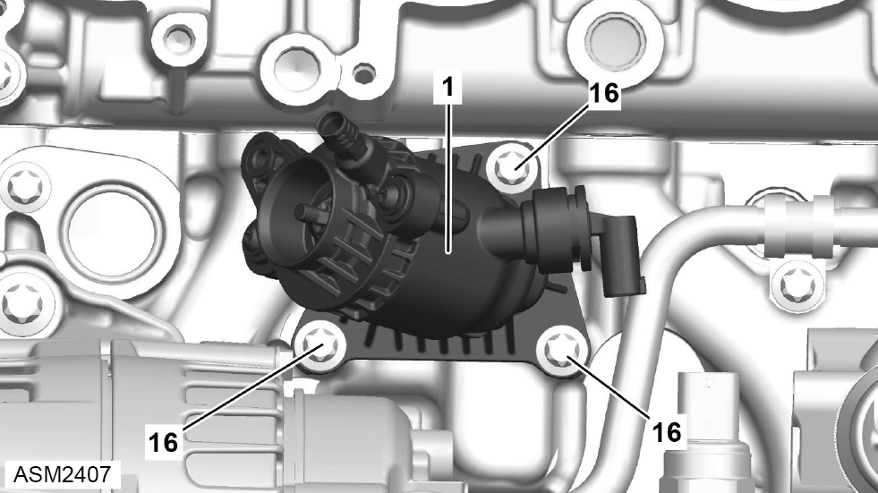

High Temperature Thermostat Housing Assembly - 4 Cylinder
Print
Operation Code: 40.13.19-02
Important information
 WARNING: Risk of scalding. Allow coolant to cool completely before proceeding.
WARNING: Risk of scalding. Allow coolant to cool completely before proceeding.
WARNING: Coolant is a toxic substance and can be lethal if ingested.
Removal
- Drain coolant. Refer to procedure.
- Remove charge air distributor. Refer to procedure.

- Disconnect harness connector from high temperature thermostat.
- Remove bolt securing coolant feed pipe to high temperature thermostat. Torque 8 Nm.
- Disconnect coolant feed pipe from high temperature thermostat.
NOTE: Be prepared to catch any excess fluid.
NOTE: Remove and discard O-ring.
- Disconnect coolant return pipe from high temperature thermostat.

- Remove bolts (16) (x3) securing high temperature thermostat (1) to engine. Torque 8 Nm.
- Remove high temperature theermostat.
Remove and discard gasket.
Installation
- Installation is the reverse of removal procedure.
NOTE: Renew discarded O-ring and gasket.